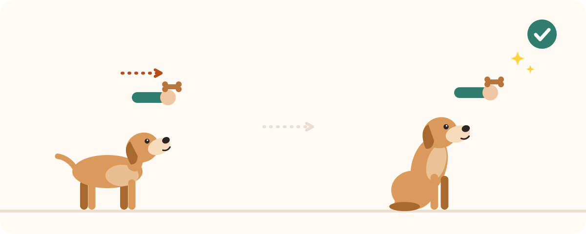

⏱️ Coach 5 minuti: la sessione di oggi
Un esercizio al giorno, spiegato in 3 passaggi, con un timer. Il tuo animale migliora, tu mantieni il ritmo.

Come funziona?
- Indica il nome e la specie del tuo animale. Il coach prepara un percorso adatto: 8 esercizi per il cane, 6 per il gatto, 5 per il coniglio e 5 per l'uccello.
- Fai la sessione di oggi. Un solo esercizio, 3 passaggi, un consiglio. Avvia il timer di 5 minuti e fermati quando suona.
- Di' com'è andata. Facile: l'esercizio avanza in fretta. Difficile: il coach lo ripropone, senza pressione.
- Torna domani. Un esercizio è «imparato» dopo alcune sessioni riuscite; allora si sblocca il successivo.
Perché solo 5 minuti?
Un animale impara meglio con sessioni brevi e frequenti che con sessioni lunghe e occasionali: l'attenzione cala in fretta, ed è meglio fermarsi su un successo che sulla noia. Cinque minuti sono anche una durata che si riesce davvero a mantenere ogni giorno. La serie di giorni mostrata dal coach serve a questo: aiutarti a tenere il ritmo.
Tutte le sessioni si basano sul rinforzo positivo: si premia ciò che l'animale fa bene, non si punisce. Se un esercizio si blocca, per ora è troppo difficile: va semplificato.
I tuoi dati restano sul tuo dispositivo
Nessun account, nessuna e-mail: il nome del tuo animale e i suoi progressi sono salvati solo nel tuo browser. Se cambi dispositivo o cancelli i dati del sito, i progressi ripartono da zero.
Per approfondire
- 🧩 Quiz: quale metodo per il tuo animale?
- 🐶 Programma cucciolo 30 giorni
- Il clicker training per iniziare
- Tutti i metodi di educazione
Il coach propone esercizi di educazione di base. In caso di paura intensa, aggressività o un cambiamento improvviso del comportamento, consulta prima un veterinario.